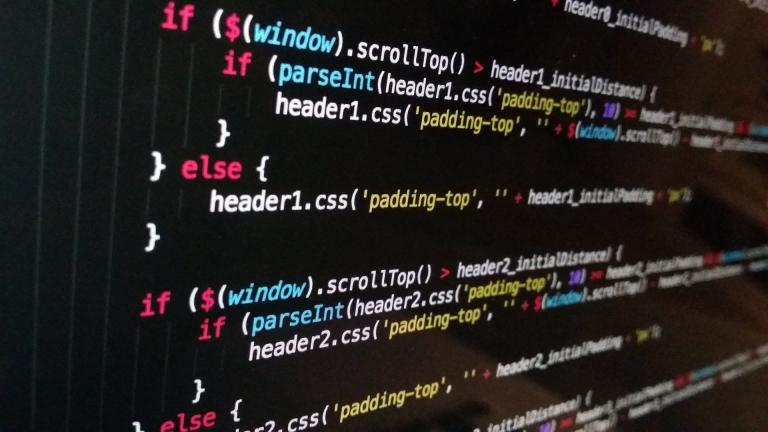

Projektowanie Oprogramowania
Strona Główna
Repozytoria Git
Techniki Zwinne
Wzorce Projektowe
Projektowanie Oprogramowania
Strona dotyczy technik projektowania oprgoramowania oraz niektórych narzędzi, które w tym pomagają.
